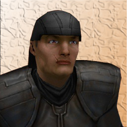
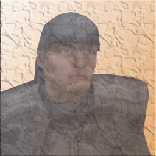
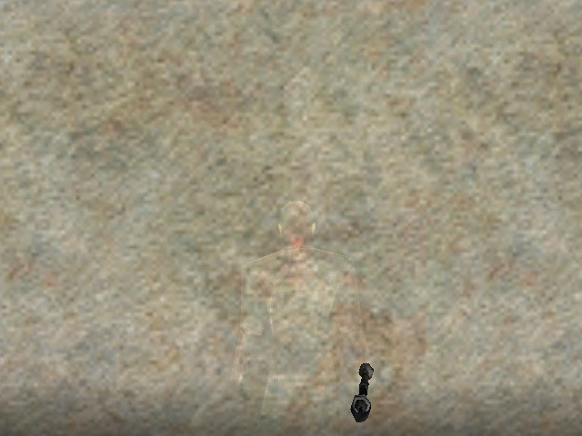
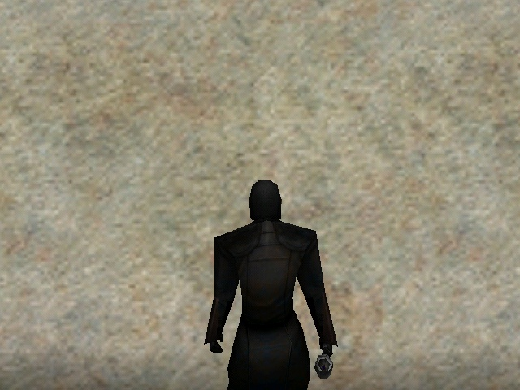
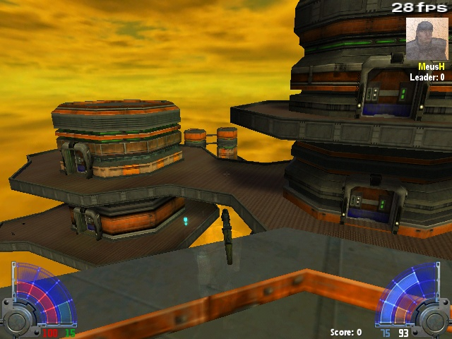
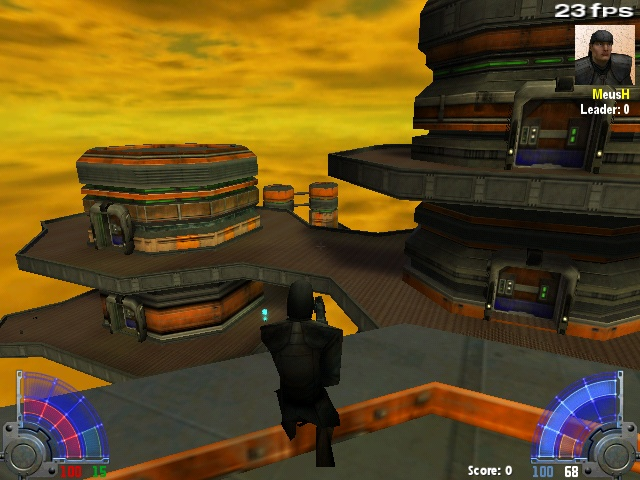

CLOAKED IMPERIAL SABOTEUR
Sorry, but download is not avaible
Alternative
mirror
This COOL mod lets you cloak \ decloak in MP like one
guy from SP
It also adds bot, that is always cloaked
This mod contains a script, that lets you cloak \ decloak
player with Q and W
When (de)cloaking a cloaking device sound is played
With this mod taunt of this guy is more realistic, because he
says
You can't hit what you can't see
|
 |
 |



